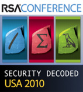

events
ICF Featured Events at Burton Catalyst 2010 San Diego
 The annual summer Catalyst conference put on by the Burton Group is happening again this coming week in San Diego. A large number of Information Card Foundation members and directors will be in attendance. Here is a list of all the events that are of particular interest to ICF members and others involved with open identity technologies:
The annual summer Catalyst conference put on by the Burton Group is happening again this coming week in San Diego. A large number of Information Card Foundation members and directors will be in attendance. Here is a list of all the events that are of particular interest to ICF members and others involved with open identity technologies:
Information Cards at the 2010 European Identity Conference
 Munich, Germany -- Information Cards and ICF members were very active in the European Identity Conference (EIC) in Munich this past week. To begin with, ICF board member Kim Cameron accepted the European Identity Award for “Best Innovation” on behalf of Microsoft for its U-Prove minimal disclosure technology. The award was shared with IBM for its similar Idemix technology. Both solutions were lauded by EIC host Kuppinger Cole as pioneering efforts in enhancing online privacy and security.
Munich, Germany -- Information Cards and ICF members were very active in the European Identity Conference (EIC) in Munich this past week. To begin with, ICF board member Kim Cameron accepted the European Identity Award for “Best Innovation” on behalf of Microsoft for its U-Prove minimal disclosure technology. The award was shared with IBM for its similar Idemix technology. Both solutions were lauded by EIC host Kuppinger Cole as pioneering efforts in enhancing online privacy and security.
Mr. Cameron also gave a keynote address, “Federated Directory meets Minimal Disclosure: Mortal Enemies or Soul Mates?” in which he showed how cloud computing, social networks, and enterprise collaboration demand federation of directory information across trust boundaries to create a distributed information fabric. Mr. Cameron then asserted that, by using technologies like U-Prove, these federations can be built to be consistent with the requirements of minimal disclosure.
ICF Breakfast at the European Identity Conference
Munich, Germany -- ICF Executive Director Drummond Reed, chair Paul Trevithick, and board members Kim Cameron, Pamela Dingle, Jörg Heuer, Anthony Nadalin, Andrew Nash, Axel Nennker, and Sandy Porter are all attending the European Identity Conference this week. Kim Cameron gave a keynote on the first day of the conference on Tuesday covering the next steps for federated identity management, including using Information Card tokens with Microsoft's recently announced U-Prove technology, and what Kim calls "federated directory systems".
The ICF directors and members will hold a special "birds of a feather" breakfast session on the final day of the conference, Friday May 7, starting at 8AM local time outside the main dining room of the conference location at the Deutschen Museum, Museumsinsel 1, 80538 München. We invite all interested ICF DACH chapter members, EIC attendees, and their guests to attend.
Featured Interview with the Province of British Columbia
 Last December ICF Executive Director Drummond Reed spent a day in Victoria, B.C. with the identity management team in the Office of the CIO for the Province of British Columbia, including Ian Bailey, the Executive Director of Architecture and Standards, Charmaine Lowe, Director of Information Standards, and Patricia Wiebe, Senior Identity Architect. The following interview is based on many of the topics they discussed.
Last December ICF Executive Director Drummond Reed spent a day in Victoria, B.C. with the identity management team in the Office of the CIO for the Province of British Columbia, including Ian Bailey, the Executive Director of Architecture and Standards, Charmaine Lowe, Director of Information Standards, and Patricia Wiebe, Senior Identity Architect. The following interview is based on many of the topics they discussed.
Q: Let’s start with the big picture: when did your office first begin to focus on identity management?
A: Back in 1996 we determined that identity management was going to be key to developing a shared services approach for the delivery of IM/IT services for government and started a program to develop a corporate identity management Technology was a real barrier for us at that point, but with the release of Windows Active Directory in 2000 we were able to consolidate most of our directories into a single centralized domain for government workers. Also at that time we were building our first version of an authentication service to support government’s interactions with businesses and citizens, and in 2002 we started our BCeID identity provider service. We learned a lot from those first efforts, particularly that directory centric solutions were not going to work in the long term.
Q: So you’ve been at this a long time. Overall, what are the goals of your IdM program, i.e., what’s your vision for what IdM can do for the BC government and the people of the province?
ICF Participating in OASIS IMI Interop at 2010 RSA Conference
ICF will be an active participant in the OASIS IMI Interop to be held next week at the 2010 RSA Conference at the Moscone Center in San Francisco. The Interop will focus on demonstrations of the GSA ICAM IMI 1.0 Profile for use of Information Cards to U.S. government identity assurance levels.
Contributors to the ICF presence at the Interop include Avoco Secure, Azigo, the Province of British Columbia, Equifax, Meristic, Microsoft, Openinfocard, and PayPal. They will be demonstrating Information Cards, relying party sites, and selectors compatible with the GSA ICAM IMI 1.0 Profile.
The IMI Interop will be held in the OASIS booth (#2545) on the RSA show floor. The booth will be open:
- 6-8PM Monday March 1
- 11-6PM Tuesday March 2
- 11-6PM Wednesday March 3
- 11-3PM Thursday March 4
Currently IMI Interop presentations are scheduled every two hours during the day in the booth. Direct interop demonstrations will be going on continuously. We invite you to come by the booth and visit us.
ICF will also be participating in a major announcement about the establishment of new infrastructure for online identity assurance – watch for further information here.
Lastly, the ICF Board of Directors will hold a face-to-face meeting from 3-7PM on Thursday March 4 at SPUR, 654 Mission Street (two blocks from Moscone).
NIH iTrust Forum Features Information Cards and the Open Identity Framework
 Bethesda, MD, USA – The first iTrust Forum, held today at the National Institute of Health (NIH) headquarters in Bethesda, MD, featured a four-part session about the U.S. government’s Open Identity for Open Government Initiative. NIH is leading government adoption of this initiative through the NIH Federated Identity Service. NIH demonstrated the first production use of open identity technologies at the iTrust Forum by showing how the Federated Identity Service now accepts logins from several of the ten OpenID and Information Card identity providers who have announced participation in the initiative.
Bethesda, MD, USA – The first iTrust Forum, held today at the National Institute of Health (NIH) headquarters in Bethesda, MD, featured a four-part session about the U.S. government’s Open Identity for Open Government Initiative. NIH is leading government adoption of this initiative through the NIH Federated Identity Service. NIH demonstrated the first production use of open identity technologies at the iTrust Forum by showing how the Federated Identity Service now accepts logins from several of the ten OpenID and Information Card identity providers who have announced participation in the initiative.
In a separate demonstration, Don Schmidt of Microsoft showed a prototype “multi-protocol selector” – software that will enable users to do both OpenID and Information Card registration/login to websites through one simple, safe, visual interface. This will make authentication at many different websites dramatically simpler for users while at the same time providing strong protection against the main source of phishing attacks.
ICF Executive Director Drummond Reed and OpenID Foundation Executive Director Don Thibeau presented the Open Identity Framework (OIF), a new open trust framework model being developed jointly by the ICF and OIDF to solve the problem of how third-party portable identity credentials such as OpenID and Information Cards can be trusted in very large deployments, such as across the entire U.S. population and all U.S. government websites.
ICF European Report
ICF Executive Director Drummond Reed just returned from a two-week trip to the EU. He shares the following observations:
My first stop was giving a keynote at the NordSec conference in Oslo, wonderfully organized by Dr. Audun Jøsang of the University of Oslo. The agenda was one of the richest of any conference in my recent memory; I found myself taking notes constantly on talks covering STORK, ID management based on mobile SIM cards, and privacy risks in Web 2.0, among other topics.
The day ended with a panel on “Global identity management – a threat or an opportunity for privacy?” I spoke strongly in favor of the opportunity Information Card technology offers for privacy protection, and how the U.S. government’s open identity solutions initiative is taking advantage of this. That initiative and the ICF/OIDF open trust frameworks project drew a great deal of interest among the largely EU-based audience—its potential for helping “raise the bar” on Internet privacy was one the main themes of the panel.
ICF and OIDF to Present Open Trust Framework at OASIS Identity Management 2009 Conference
ICF Executive Director Drummond Reed and OpenID Foundation Executive Director Don Thibeau will present the foundation’s joint Open Trust Framework at the OASIS Identity Management 2009 conference tomorrow at the NIST headquarters in Gaithersburg, Maryland. The theme of the conference is Transparent Government: Risks, Rewards, and Repercussions.
The Open Trust Framework, summarized in the OIDF/ICF joint white paper Open Trust Frameworks for Open Government, is a mechanism that enables relying parties (the websites and services that accept open identity credentials such as OpenID or Information Cards from individuals) to verify that identity providers (the third parties providing such credentials on behalf of the individual) are certified to provide those credentials at the level of assurance (LOA) the relying party requires.
In the case of U.S. government, for example, there are four LOAs defined by NIST and the Office of Management and Budget (OMB), each with its own level of identity proofing, security, and privacy requirements. With the Open Trust Framework, U.S. government websites will be able to determine if a particular identity credential meeting the ICAM OpenID 2.0 profile or IMI Information Card 1.0 profile at a particular LOA was issued by an identity provider certified to meet the U.S. government requirements at that LOA.
OpenID Foundation and ICF Publish Joint White Paper on Open Trust Frameworks for Open Government
Washington D.C. - At the Open Government Identity Management Solutions Privacy Workshop held today in Washington D.C., Don Thibeau, Executive Director of the OpenID Foundation, and Drummond Reed, Executive Director of the Information Card Foundation, announced a joint white paper from both foundations. Entitled Open Trust Frameworks for Open Government, the paper explains the approach both foundations are taking to enable open, Internet-scale trust networks using OpenID and Information Cards.
"Open trust frameworks are the way to bridge open identity technologies like OpenID and Information Cards with the trust requirements of large communities such as the U.S. federal government," said Mr. Reed. "They are a practical solution to enabling government agency websites and applications to accept identities from non-governmental identity providers. This reduces friction and lowers costs while at the same time increasing security and privacy."
The focus of the workshop was the privacy implications of introducing open identity technologies to federal websites. Besides Mr. Reed, speakers on this topic included:
Information Cards at the EEMA Meeting in London
 The European e-Identity Management Association (EEMA) held its annual conference in London last week, and Information Cards were a major topic. At the opening session on Thursday, 25 June, Kim Cameron of Microsoft gave an overview of claims-based identity and the role of Information Cards in a claims-based identity metasystem. He also mentioned his new white paper, Proposal for a Common Identity Framework: A User-Centric Identity Metasystem, co-authored with Reinhard Posch (federal CIO for the Austrian government since 2001) and Kai Rannenberg (the T-Mobile Chair for Mobile Business and Multilateral Security at Goethe University Frankfurt).
The European e-Identity Management Association (EEMA) held its annual conference in London last week, and Information Cards were a major topic. At the opening session on Thursday, 25 June, Kim Cameron of Microsoft gave an overview of claims-based identity and the role of Information Cards in a claims-based identity metasystem. He also mentioned his new white paper, Proposal for a Common Identity Framework: A User-Centric Identity Metasystem, co-authored with Reinhard Posch (federal CIO for the Austrian government since 2001) and Kai Rannenberg (the T-Mobile Chair for Mobile Business and Multilateral Security at Goethe University Frankfurt).
The second day of the conference featured an Identity Metasystems Roundtable, moderated by John Bradley, ICF Fellow and OASIS IDtrust Steering Committee Member, Tony Nadalin of Microsoft, and Drummond Reed, ICF Executive Director. It was an in-depth discussion covering many current topics in the Information Card and IMI ecosystem, including: